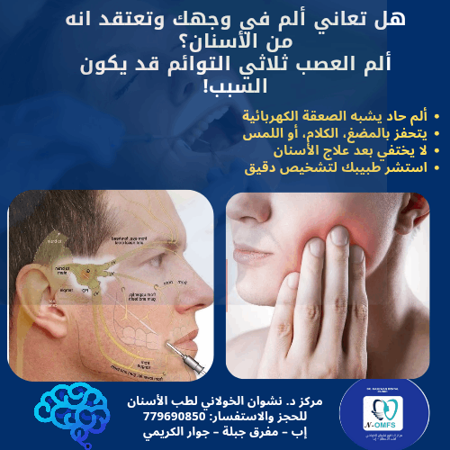

نصائح ذهبية للحماية من تسوس الأسنان
اتبع هذه الإرشادات البسيطة للحفاظ على أسنانك قوية وصحية وخالية من التسوس...
28 أكتوبر 2023نعتني بابتسامتك بأحدث التقنيات وأفضل الخبرات في قلب مدينة إب.
نقدم مجموعة شاملة من علاجات الأسنان لتلبية جميع احتياجاتكم.
هل تحلم بابتسامة ساحرة كنجم سينمائي؟ نقدم في مركزنا أحدث تقنيات تجميل الأسنان، من ابتسامة هوليود المتكاملة إلى تبييض الأسنان بالليزر للحصول على بياض ناصع، بالإضافة إلى قشور الفينير واللومينير التجميلية لتعديل شكل ولون الأسنان، وحشوات تجميلية بلون السن الطبيعي.
فقدان الأسنان لم يعد مشكلة! نوفر حلول زراعة الأسنان الشاملة، من تعويض سن واحد إلى الفك بالكامل، باستخدام أجود أنواع الزرعات العالمية. نتميز بتقنيات الزراعة الفورية، الزراعة الموجهة بالكمبيوتر، وتقنية الزرعات المصممة ثلاثية الأبعاد للحالات المعقدة، بما في ذلك زراعة العظم وزراعة الـ Zygomatic لضمان أفضل النتائج حتى في أصعب الحالات.
يقدم الدكتور نشوان الخولاني، بخبرته كاختصاصي جراحة الوجه والفكين، مجموعة واسعة من العلاجات الجراحية الدقيقة والمعقدة، بما في ذلك خلع الأسنان الجراحي (مثل أضراس العقل المطمورة)، علاج أكياس وآفات الفكين، كسور عظام الوجه والفكين، وعلاج التشوهات الخلقية والمكتسبة للوجه والفكين.
ابتسامة منتظمة وجميلة تعزز ثقتك بنفسك. نقدم حلول تقويم الأسنان لجميع الأعمار لعلاج ازدحام الأسنان، بروز الفكين، والفراغات بين الأسنان، باستخدام أنواع مختلفة من التقويم كالمعدني، الشفاف، والداخلي (اللساني) لتناسب احتياجاتك ومظهرك.
نولي اهتمامًا خاصًا بصحة أسنان أطفالكم منذ الصغر. يوفر مركزنا رعاية متخصصة ومريحة للأطفال تشمل الفحوصات الدورية، العلاجات الوقائية مثل تطبيق الفلورايد وسادات الحفر، علاج التسوس بحشوات مناسبة، والمتابعة لضمان نمو أسنان صحية وقوية.
لا داعي لخلع السن بسبب التهاب العصب! نستخدم أحدث الأجهزة والمواد في علاج جذور وأعصاب الأسنان بدقة وفعالية، مما يساعد على إنقاذ السن المصاب وتخفيف الألم والحفاظ على وظيفة السن الطبيعية لأطول فترة ممكنة.
صحة فمك تبدأ بالوقاية والفحوصات المنتظمة. نقدم مجموعة متكاملة من العلاجات العامة والوقائية كالتنظيف الاحترافي للأسنان وإزالة الجير، علاج أمراض اللثة، الحشوات بأنواعها، الخلع الجراحي وغير الجراحي، بالإضافة إلى التركيبات السنية الثابتة والمتحركة عالية الجودة.
في مركز الدكتور نشوان الخولاني، نسعى لتقديم تجربة علاجية فريدة تجمع بين الخبرة الطويلة، أحدث التقنيات، والاهتمام الشخصي بكل مريض. تأسس مركزنا ليكون الوجهة الأولى لصحة الفم والأسنان في مدينة إب، مع التزامنا بأعلى معايير الجودة والتعقيم.
نؤمن بأن الوقاية خير من العلاج، لذا نركز على توعية مرضانا بأهمية العناية بصحة الفم والأسنان. فريقنا مستعد دائمًا لتقديم النصح والإرشاد للحفاظ على ابتسامة مشرقة تدوم طويلاً.
فلسفتنا في الرعاية: نعتبر كل مريض فردًا من عائلتنا، ونسعى جاهدين لتوفير بيئة علاجية مريحة وآمنة تخفف من أي قلق قد يشعر به. يحرص فريقنا على الاستماع لاحتياجاتكم وتقديم خطط علاجية شفافة ومناسبة، مع التزامنا بأخلاقيات المهنة وتطبيق أحدث البروتوكولات العالمية في التعقيم وسلامة المرضى.
نخبة من الأطباء المتخصصين لتقديم أفضل رعاية لأسنانكم.
مدير المركز واختصاصي جراحة الفم والوجه والفكين
يمتلك الدكتور نشوان خبرة واسعة تمتد لأكثر من 20 عاماً في مختلف مجالات طب الأسنان، مع تركيز خاص على زراعة وتقويم وتجميل الأسنان، وجراحة الوجه والفكين. حاصل على دكتوراه في جراحة الوجه والفكين وزراعة الأسنان، بالإضافة إلى دبلومات متخصصة في تجميل الأسنان وجراحة وأمراض اللثة. يحرص دائمًا على مواكبة أحدث التطورات في طب الأسنان لتقديم أفضل رعاية ممكنة لمرضاه.
شهادات نعتز بها من بعض عملائنا الكرام.
"تجربتي في مركز الدكتور نشوان كانت رائعة جدًا. الفريق محترف والاهتمام بالتفاصيل مذهل. حصلت على ابتسامة كنت أحلم بها!"
من مدينة إب
"كنت أعاني من قلق شديد تجاه طبيب الأسنان، لكن الدكتور نشوان وفريقه جعلوني أشعر براحة تامة. العلاج كان بدون ألم والنتيجة فاقت توقعاتي."
"خدمة ممتازة وأسعار مناسبة. أنصح بشدة بمركز الدكتور نشوان الخولاني لكل من يبحث عن جودة واحترافية في علاج الأسنان."
[ ]
نفتخر بمساعدة مرضانا في الحصول على ابتسامات صحية وجميلة. (جميع الصور بموافقة المرضى)
نجيب على أكثر استفساراتكم شيوعًا حول خدماتنا.
نعمل في الفرع الرئيسي (مفرق جبلة) وفرع الدائري من السبت إلى الخميس، من الساعة 9:00 صباحًا حتى 1:00 ظهرًا، ومن الساعة 4:00 عصرًا حتى 8:30 مساءً. يوم الجمعة إجازة رسمية.
نعم، نفضل الحجز المسبق لضمان حصولكم على أفضل خدمة وتجنب الانتظار الطويل. يمكنكم الحجز عبر الاتصال الهاتفي بالأرقام الموضحة.
حاليًا، لا نتعامل بشكل مباشر مع جميع شركات التأمين، ولكن يمكننا تزويدكم بالفواتير والتقارير اللازمة لتقديمها لشركة التأمين الخاصة بكم. يرجى الاستفسار عن تفاصيل الدفع عند الحجز.
تختلف تكلفة الخدمات بناءً على نوع العلاج المطلوب وحالة المريض. يمكنكم الحصول على استشارة أولية لتقييم الحالة وتقدير التكلفة. نحن نسعى لتقديم أسعار تنافسية مع الحفاظ على أعلى معايير الجودة.
نعم، ألم الوجه قد يكون له أسباب متعددة، ومنها ألم العصب ثلاثي التوائم الذي قد يتشابه مع ألم الأسنان. من المهم استشارة طبيبك لتشخيص دقيق. يمكن الاطلاع على هذا البوستر لمزيد من المعلومات:
معلومات مفيدة للحفاظ على ابتسامة صحية وجذابة.
اتبع هذه الإرشادات البسيطة للحفاظ على أسنانك قوية وصحية وخالية من التسوس...
28 أكتوبر 2023
أسباب حساسية الأسنان وطرق علاجها والوقاية منها للحصول على راحة دائمة...
25 أكتوبر 2023تعرف على الأسباب الشائعة لآلام الأسنان ومتى يجب عليك زيارة الطبيب فورًا...
22 أكتوبر 2023تعرف على فوائد التخدير الواعي وكيف يساعدك على تجاوز قلق علاج الأسنان...
19 أكتوبر 2023نحن هنا لمساعدتك! لا تتردد في الاتصال بنا أو زيارتنا في أحد فروعنا.